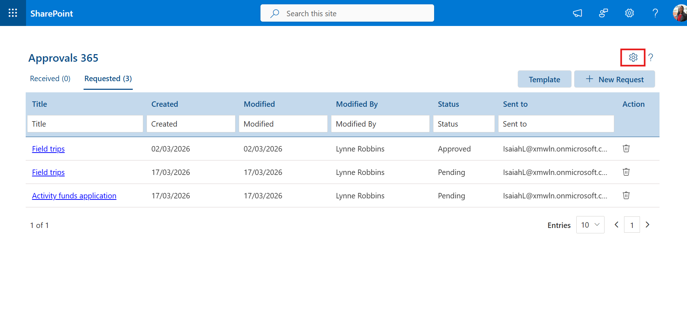
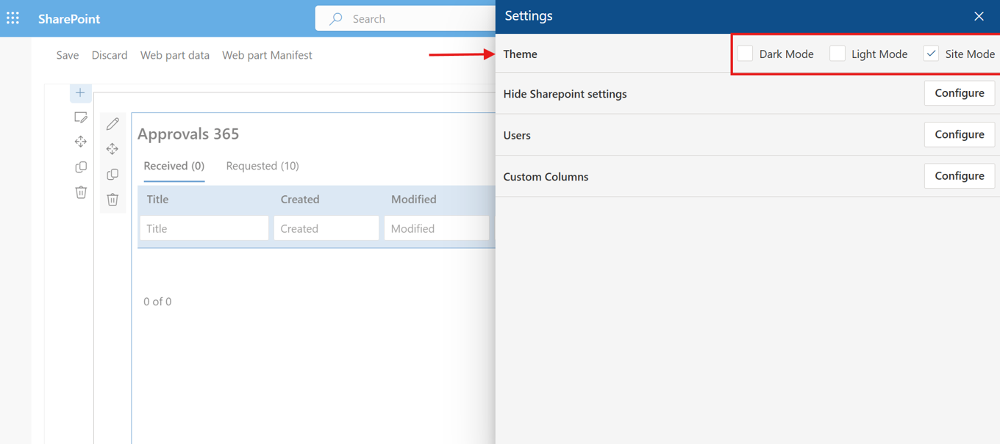
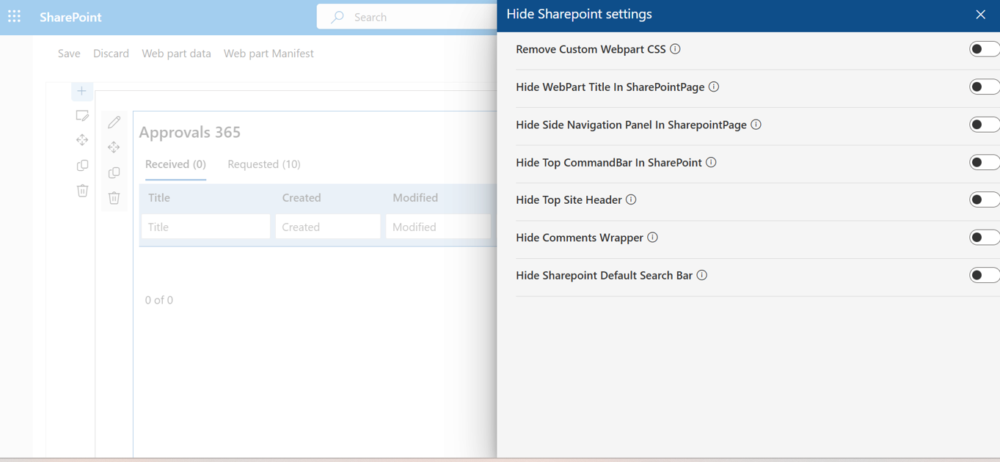
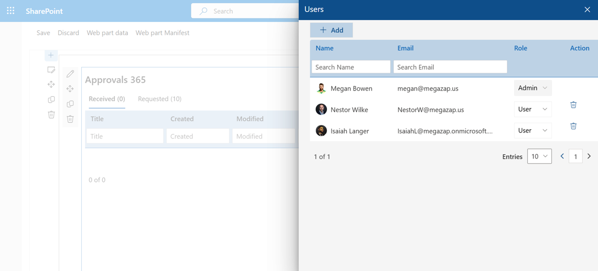
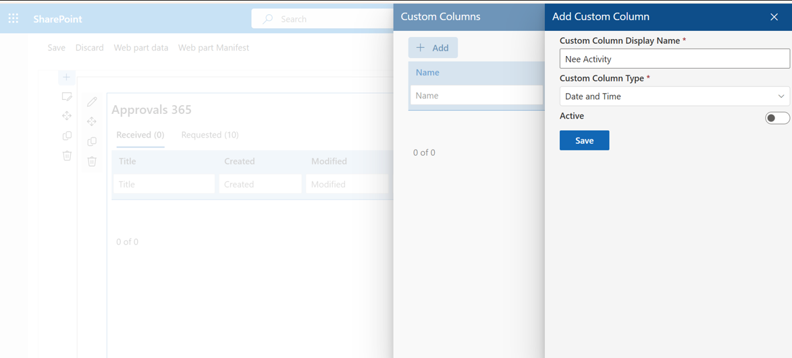

Settings
Click Settings to open the web part’s configuration panel. Here you can tailor the overall behavior:

Theme Settings
Theme Options allow you to change the overall appearance of the Survey cards and list. We have 3 themes, Site, Dark and Light.

Hide SharePoint Settings
At the top of this section, a Full-Page Settings toggle is provided. Turning it on automatically enables all other toggles below, letting you instantly apply a complete, distraction-free view without switching them on individually.
When you click Configure under Hide SharePoint Settings, a panel appears with the following toggles. Turning any toggle on hides that SharePoint UI element from the page, giving your Accordion a clean, distraction-free presentation:
- Remove Custom Webpart CSS
- Hide WebPart Title in SharePoint Page
- Hide Side Navigation Panel in SharePoint Page
- Hide Top Command Bar in SharePoint
- Hide Top Site Header
- Hide Comments Wrapper
- Hide SharePoint Default Search Bar
By default, all toggles are off. You can enable any combination to customize how much of the surrounding SharePoint chrome remains visible.
At the bottom of the panel, a Save button is provided. Clicking this button saves all changes at once, applying your selected settings to the page.

Add Additional Admins
- Click Configure under Add Additional Admins to see a user-management grid with these columns:
- Name (text) — the user or group display name
- Email (text) — the user’s login email
- Role (dropdown) — options: Admin or User
- At the top of the grid is an empty input row where you can type a new Name, Email, and select a Role, then press Enter to add them.
- Pagination controls at the bottom let you show 10, 25, or 50 entries per page.
- Existing entries display beneath, e.g.: · Megan Bowen | megan@megazap.us | Admin · Isaiah Langer | IsaiahL@megazap.onmicrosoft.com | User

Custom Columns
Administrators can create custom metadata fields to enhance reporting or categorization.
Admins can:
- Define column display names
- Select types (Text, Number, Date & Time, Yes/No, etc.)
- Toggle Active/Inactive status
These columns become available throughout the system for filtering and data enrichment.
